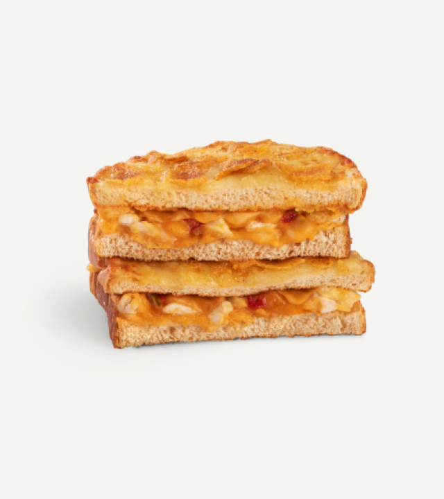
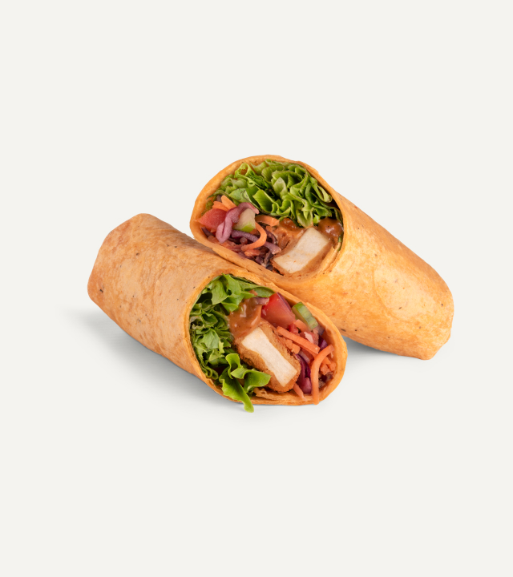
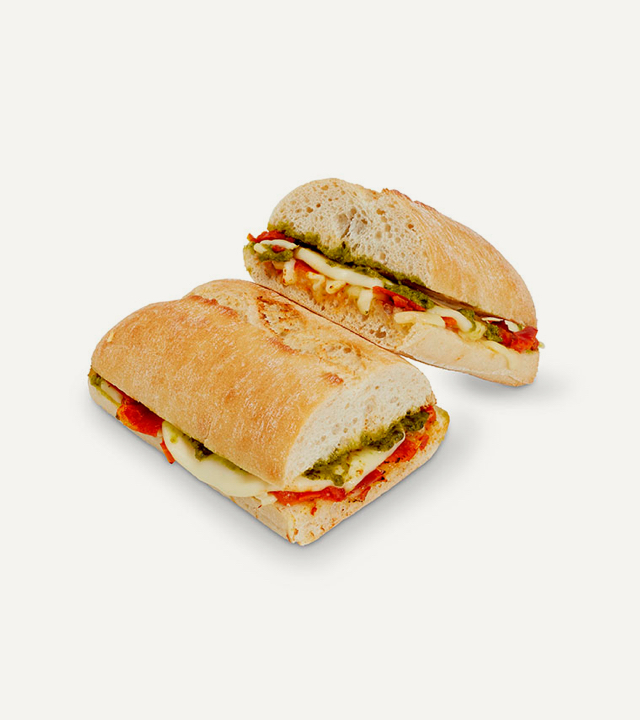
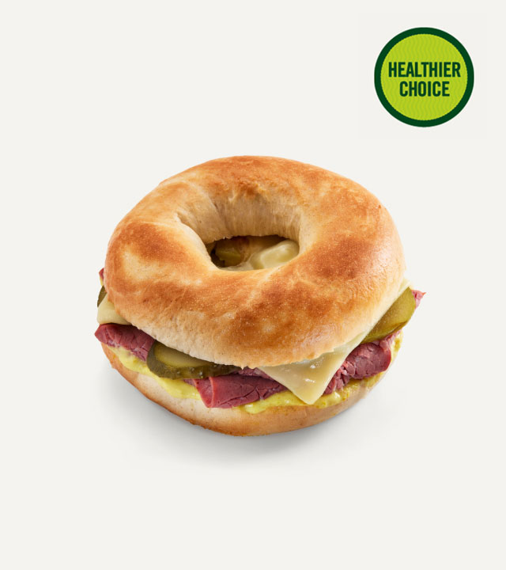

Food
Nacho Chilli Cheesee & Chicken Toastie
British roast chicken & Mexicana Cheddar Cheese with a cheese sauce & jalapeños on tortilla chips & cheese topped bloomer bread. Crispy nacho chips are typically crushed or layered within the sandwich to provide a crunchy texture and authentic nacho flavour.
Southern Fried Chicken
Southern fried chicken, slaw & lettuce with BBQ mayonnaise in a tomato torilla wrap. Common fillings and toppings of shredded lettuce, dice tomatoes, sliced onions, pickles, shredded cheese for added flavor and texture. Additionally, a creamy sauce spread over the chicken before wrapping.
Mozzarella & Tomato Panini
A delightful combination of fresh mozzarella cheese, juicy tomatoes, and aromatic basil leaves, all layered between slices of artisanal bread and pressed to perfection. Served warm, our Mozzarella & Tomato Panini is a classic Italian favorite that will tantalize your taste buds with its savory flavors and gooey texture. Slow roasted tomatoes and basil pesto on a toasted sourdough ciabatta.
New York Deli Bagel
We generously spread a layer of creamy cream cheese, providing a velvety base for the delicious toppings to come. We pile on crisp lettuce and juicy tomato slices, perfectly complementing the savory notes of the pastrami. Succulent beef pastrami, sliced gherkins & Emmental cheese with mustard béchamel in a bagel.
